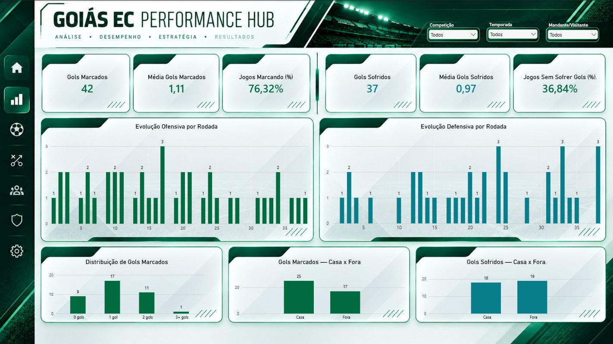
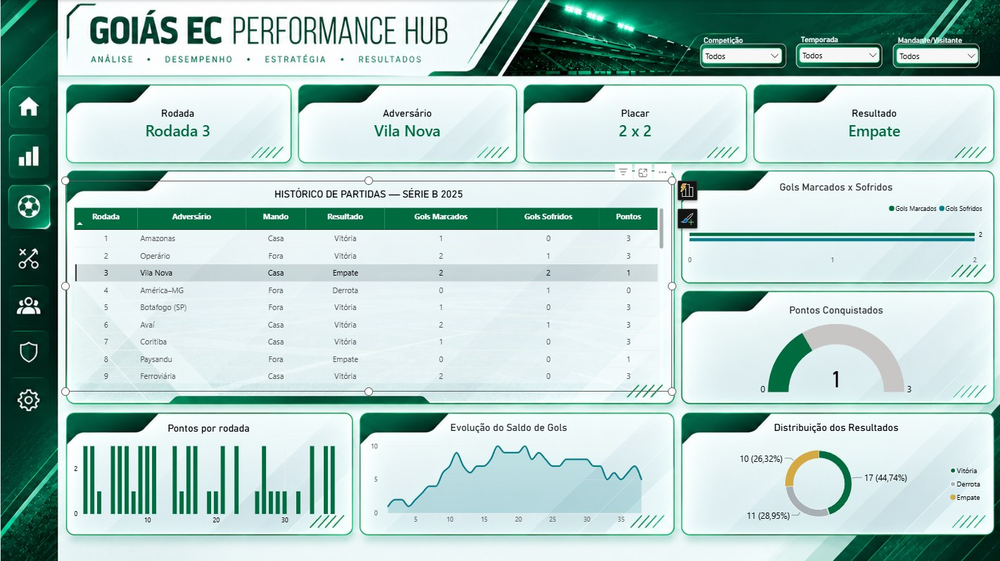
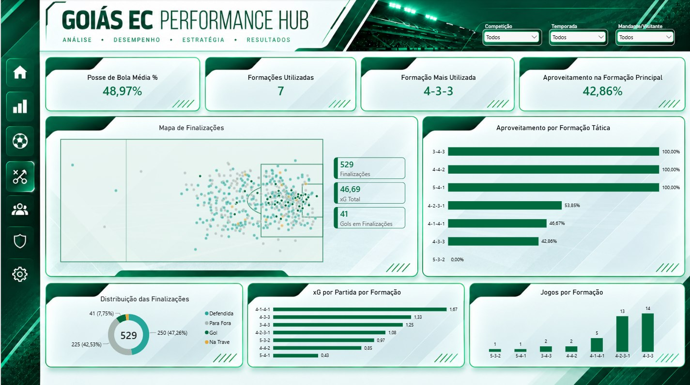
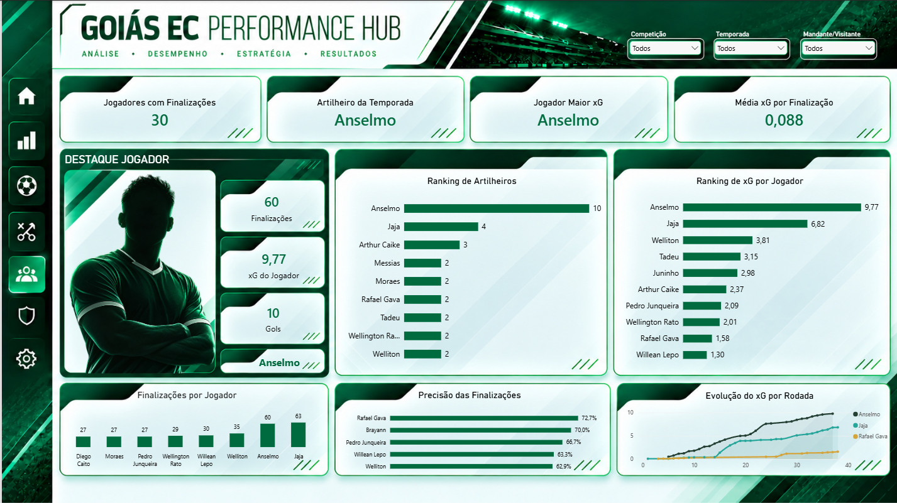

Objetivo da análise
Investigar como o desempenho da equipe variou ao longo do campeonato, relacionando resultados com produção ofensiva, solidez defensiva e contexto de cada partida.
Análise da campanha do Goiás EC na Série B de 2025, reunindo as 38 partidas em cinco páginas de Power BI. O projeto parte da coleta e organização de dados esportivos em Python e avança para indicadores de resultados, finalizações, desempenho coletivo, análise de partidas e leitura tática.
Objetivo, organização das informações e principais leituras disponíveis no painel.
Investigar como o desempenho da equipe variou ao longo do campeonato, relacionando resultados com produção ofensiva, solidez defensiva e contexto de cada partida.
Dados de partidas e estatísticas esportivas coletados e organizados com Python, com limpeza, padronização e validação antes da utilização no Power BI.
Preparação dos dados no Power Query, organização do modelo analítico, construção de medidas DAX e desenvolvimento de cinco páginas com filtros e navegação entre visões.
A leitura conjunta dos indicadores permite comparar mandante e visitante, acompanhar a evolução da campanha e identificar partidas e períodos com diferenças entre volume de finalizações e resultado.




